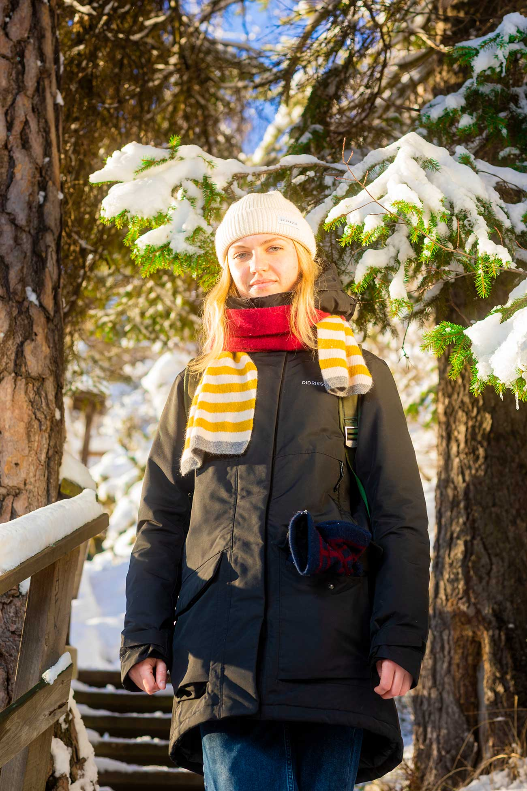

Photography: Location Photography
Scope
Location photography involves scouting for suitable locations and learning how to capture the best shots with the right equipment at the optimal time of day.
Read Documentation Astro portraits Read Documentation Norra BergetProject Case
Main job:
Researching
Location Scouting
Photographing
Lighting Subjects
Documenting
Date:
2023.3.15
Overview:
In the documents, I am presenting several projects that I photographed during the course. You can observe the research, approach, and, of course, the final results!
Outcome:
Serveral Location photography documentations.
Some of the photo's below!



All projects